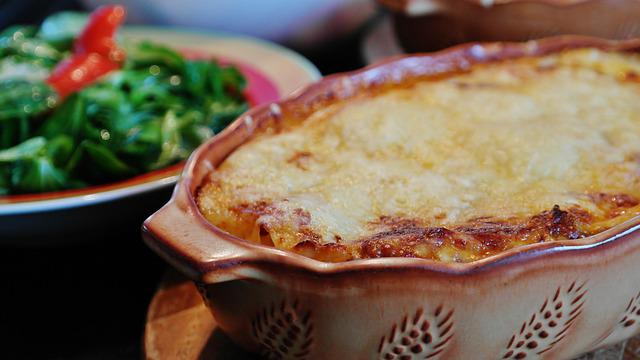

Lasagna recipee

Ingredients
- 1 lb of Italian sausage (or ground beef)
- 2 (14 oz) cans of tomato sauce
- 1 (14 oz) can of diced tomato
- 1/2 onion, diced
- 3 garlic cloves, minced
- 1/2 tsp dried basil
- A pinch of salt and black pepper
- 3/4 lb of lasagna noodles, broken
- 1-2 cups of mozzarella cheese, shredded
- Ricotta cheese
- Fresh parsley, chopped
Instructions
- Heat the skillet over medium heat. Add the ground sausage or ground beef (whatever you prefer), cook, while stirring continuously. When it's close to being done, add diced onion and cook for a few more minutes.
- When the onion is translucent, and the meat is cooked, add minced garlic. Mix everything and cook for another minute.
- Add the tomato sauce and diced tomato. You can add some extra garlic and basil here. Make sure the sauce covers the meat and onion mixture. Add seasoning and mix it well. Let it cook for a couple of minutes over medium heat for the sauce to soak up all the flavors.
- Break lasagna noodles and add them to the skillet. Make sure the sauce covers them. Let it simmer over medium heat for 20-25min, stirring occasionally. The sauce can bubble, but don't let it come to boil.
- Once the lasagna sheets have softened, stir in Mozarella cheese until it melts, and you are done!
- Serve with a scoop of ricotta cheese, sprinkle some extra Mozzarella, and fresh parsley. Enjoy your super easy stovetop lasagna.